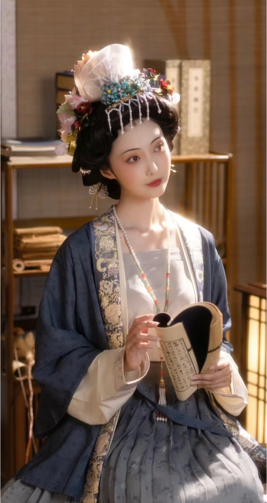
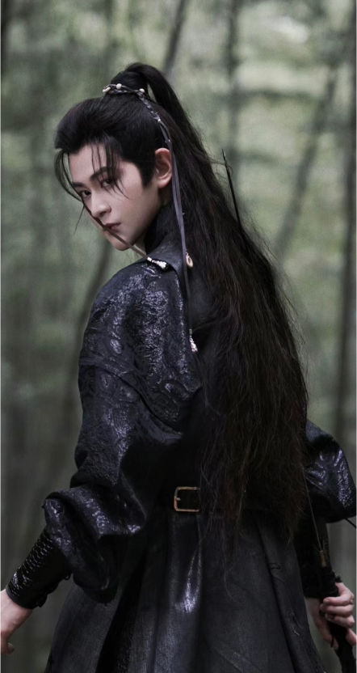

What they wear

Female
Women in the Song Dynasty liked to adorn themselves with fresh flowers and pearls.Their clothing was primarily made of silk fabric, and during this era, attire was characterized by subtle and elegant colors such as sky blue, deep red, light green, and goose yellow, among others. Clothing and accessories also symbolized social status, and various hairstyles reflected different statuses."

Male
In the Song Dynasty, it was a custom for men to wear decorative hairpins, and
receiving fresh flowers from the emperor was considered a great honor. Given the high regard for scholars and literati in the Song Dynasty, men's clothing primarily featured light and subdued colors. Noble men would also wear jade ornaments and jade crowns. The overall style was characterized by simplicity and luxury.